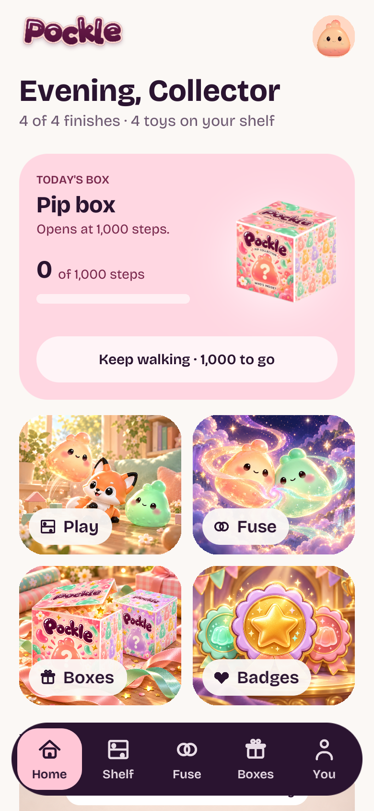
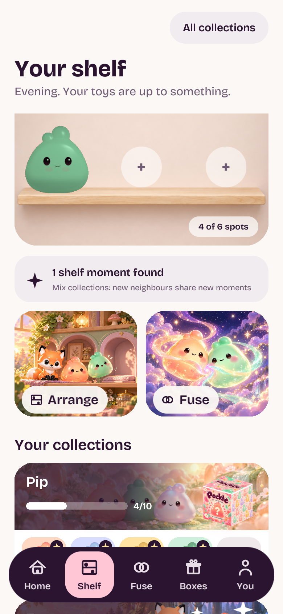

Actual Unity6000.6.5f1 captures at390×844 logical layout. Five approved complete illustrations replace the earlier backgrounds. Buttons retain readable UI labels and routes. Separate live cutouts, fusion symbols, spare chip and blanket image shading are removed from these feature buttons. Shelf cards use the larger art height and lower labels to preserve the faces.

